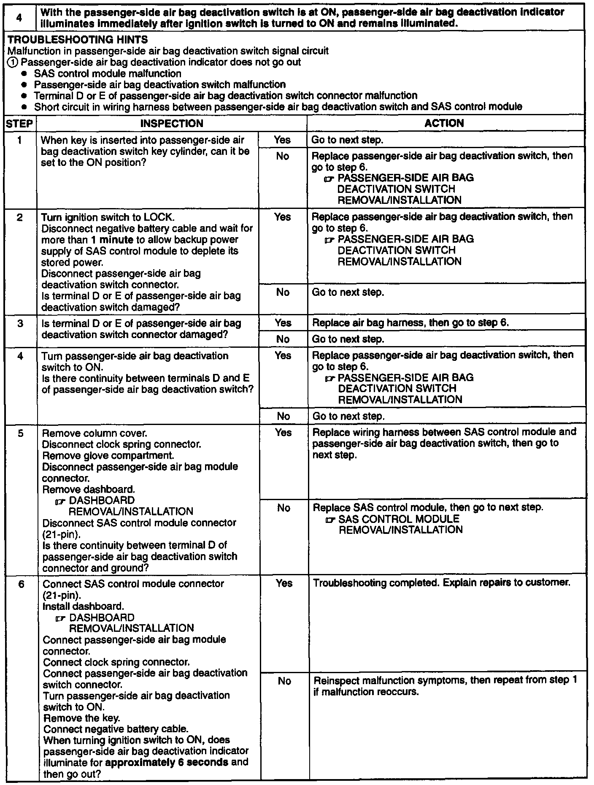

4. With Deactivation Switch ON, Deactivation Indicator Stays ON

4. With the passenger-side air bag deactivation switch is at ON, passenger-side air bag deactivation indicator illuminates immediately after ignition switch is turned to ON and remains illuminated.